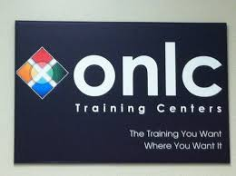
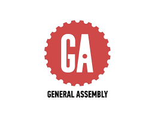

Resume
1998-2001
Softlines sales associate (Menswear), Cookeville, Tn (November 1998 - March 2001)
- Zoned and organized the menswear and boyswear clothing departments
- Answered incoming store phone calls and transferred them to the appropriate department
2001-2002
Support Team Manager, Cookeville, Tn (March 2001- April 2002)
- Supervised 3rd shift grocery
- Responded to customer issues within store
2002-2003
Photo Center Specialist, Crossville, Tn (May 2002 - September 2003)
- Rang up customers with photo center register
- Developed customers film in 1 hour or less
2003-2004
Management Training Course, Hixson, Tn (October 2003 - January 2004)
- Completed 16 week course of management training
- Completed management exam at end of course
2004-2006
Photo center/connection center manager, Dayton, Tn (February 2004 - May 2006)
- Hired and trained photo center and connection center associates
- Gave yearly evaluations to all photo center and connection center associates
- Made yearly budgets for photo center and connection center
2006
Photo center/connection center manager, Sparta, Tn (May 2006 - December 2006)
- Hired and trained photo center and connection center associates
- Gave yearly evaluations to all photo center and connection center associates
- Made yearly budgets for photo center and connection center
2006-2008
Electronics Department Manager, Smithville, Tn (December 2006 - February 2008)
- Trained associates working in electronics department
- Ensured department planograms were set correctly and in a timely manner
2008-2009
Stationary Department Manager, Carthage, Tn (March 2008-February 2009)
- Trained associates working in stationary department
- Ensured department planograms were set correctly and in a timely manner
2009-2014
Electronics Sales Associate, Carthage, Tn (February 2009 - June 2014)
- Assisted customers with purchases and rang them up
-
- Assisted in weekly planogram setting
-
- Worked new freight into department
2014-2015
Electronics Sales Associate, Cookeville, Tn (September 2014-August 2015)
- Answered incoming store calls for electronics and home appliance sections
- Assisted customers with making purchases in the electronics and home appliance sections
- Rang up customers with department register
- Upsold customers on benefits of the sears credit card and shop your way membership
2016
Freelance Web Design (January 2016-present)
- Design new websites from the ground up for clients
- Collaborate with clients on their web site layout
2016
Dollar General Market, Floor Associate (May 2016-August 2016)
- Recovered store and restocked key items
- Rang up customers when cashiers were overwhelmed on demand
Education History
High School Diploma
Macon County High School
Lafayette, Tn
Bachelor of Science
Business Administration (Marketing)
Cookeville, Tn

Onlc Training Center

Intro to Microsoft Word, March 2016
Franklin, Tn

Intro to Powerpoint, July 2015

Intro to Excel, July 2015
Nashville, Tn
Certificate of Completion Available

Generalassemb.ly
Certificate of Completion, March 2016
online circuit class for html, css and web design
November 2015 - February 2016 (12 week course)

Programming Language Experience
- HTML5
- CSS3
- Javascript
- Jquery
- JqueryUi
Contact Information